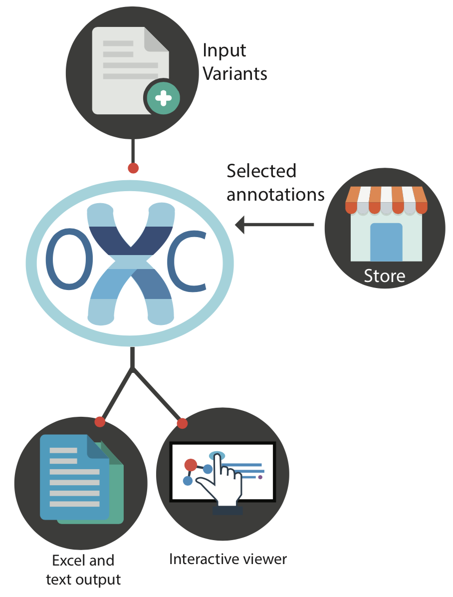
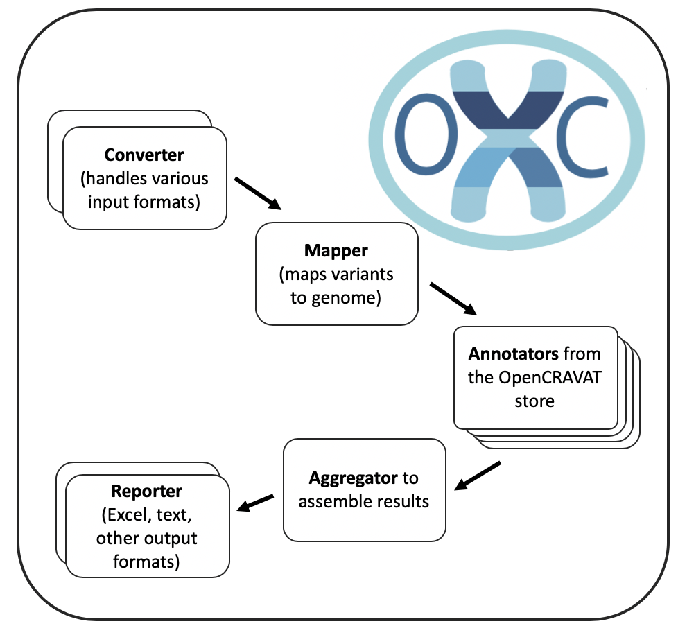

Welcome to open-cravat’s documentation!¶
OpenCRAVAT¶
- Intro to OpenCRAVAT
- Quickstart
- Command line quickstart
- Installation Instructions
- Running OpenCRAVAT
- Command line usage
- Viewing results
- GUI usage
- Filter tutorial
- Uninstallation
- GUI usage
- Filter tutorial
- Uninstallation
- Update instructions
- Annotator reference
- Annotator Tutorial
- Publish an annotator
- Widget tutorial
- Case-Control Analysis
- Cloud
- API
- Manual Page
- Reporters
- Release notes
- Multiuser support
- Variant Report
- Command line manual
- oc run | Run a job
- report | Generate a report from a job
- gui | Start the GUI
- module | Change installed modules
- config | Configuration settings
- new | Create new modules
- store | Publish modules to the store
- util | Utilities
- version | Show version
- feedback | Send feedback to the developers
- 1.7.0 Command Deprecation
- File Formats
OpenCRAVAT is a python package that performs genomic variant interpretation including variant impact, annotation, and scoring. There is a web-based version of OpenCRAVAT (https://run.opencravat.org) but it can also be installed locally and is easy to integrate into bioinformatics pipelines. OpenCRAVAT has a modular architecture with a wide variety of analysis modules that can be selected and installed/run based on the needs of a given study. The modules are made available via the CRAVAT Store and are developed both by the CRAVAT team and the broader variant analysis community. OpenCRAVAT is a product of the Karchin Lab at Johns Hopkins University in collaboration with In Silico Solutions with funding provided by the National Cancer Institute’s ITCR program.
Overview¶
{kind=link}
OpenCRAVAT is a modular python package that is available in the pip PyPI repository. It takes a file of genomic variants as input. The most common input format is a VCF file but other formats are supported including dbSNP identifiers, 23&Me and Ancestry.com file formats.
The analysis performed by OpenCRAVAT depends upon user-selected annotation and visualization options, available for download from the free OpenCRAVAT Store. In addition to the interactive user interface, OpenCRAVAT provides several output formats including text reports, Excel spreadsheets, and a SQLite database of results used by cravat_view.
OpenCRAVAT Processing¶
{kind=link}
When the pipeline program is run, it will execute a series of modules required for variant analysis. First, the appropriate converter will be run to parse the input variant file. Next, a mapper module will determine the transcripts and associated genes affected by each variant including protein impact. Then OpenCRAVAT runs all of the requested/installed annotation modules and after all annotation is complete, an aggregator program collects and collates the results into a SQLite database. Finally, reporter modules are run to produce the requested format of results.
Available Modules¶
As of 8/7/2020, openCRAVAT has the following annotators available, with more on the way.
Gene-level annotators: BioGRID, Cancer Gene Census, Cancer Gene Landscape, CIViC Gene, ClinGen Gene, COSMIC Gene, Essential Genes, ExAC Gene and CNV, gnomAD, GTEx, HaploReg, HGVS Format, InterPro, LINSIGHT, MuPIT, gnomAD Gene, Gene Ontology, HGDP, IntAct, LoFtool, MuPIT, NCBI Gene, NDEx, P(rec), p(HI), PubMed, RVIS, TARGET, UniProt, VEST
Variant-level annotators: ABraOM, Arrhythmia Channelopathy Variants, BRCA1 Multiplex Assay, CADD Exome, CardioBoost, Cardiovascular Disease Knowledge Portal CHASMplus, CHASMplus MSK-IMPACT, CIViC, ClinVar, ClinVar ACMG, COSMIC, CVDKP, DANN Coding, dbscSNV, dbSNP, denovo-DB, ENCODE TFBS, Ensembl Regulatory Build, ESP6500, FATHMM, FATHMM-MKL, FATHMM-XF Coding, FitCons, Flanking Sequence, GeneHancer, GERP++, Geuvadis eQTLs, GHIS, gnomAD, gnomAD v3, GRASP, GWAS Catalog, Likelihood Ratio Test, LitVar, MaveDB, MetaSVM, MetaLR, Mutation Assessor, Mutpanning, MutPred, ncRNA, PharmGKB, Phast Cons, PhD-SNPg, PhyloP, PolyPhen2, Promoter IR, Pseudogene, Repeat Sequences, REVEL, SCREEN, Segway, Sift, SiPhy, SwissProt PTMs, 1000 Genomes, 1000 Genomes-Ad Mixed American, 1000 Genomes-African, 1000 Genomes-East Asian, 1000 Genomes-European, 1000 Genomes-South Asian, Trinity CTAT, UK10k Cohorts, VEST, VISTA Enhancer Browser
Converters (input formats): TSV, VCF, Ancestry.com, 23andMe, FamilyTreeDNA
Reporters (output formats): Text format, Excel, TSV, CSV, Annotated VCF
System Capabilities¶
In most cases, OpenCRAVAT can process approximately 1 million variants per hour. This estimate assumes that 2/3 of the input variants are in coding regions, approximately ten annotation modules, and the system is running on an at least 4 year old laptop with a solid state drive. Runtimes depend heavily on disk speed. A mechanical hard drive will perform about 1/3 to 1/4 as well as an SSD. Most modern processors are equivalent since the disk will bottleneck annotation speed before the processor. However, processors with fewer than four cores may see reduced runtimes. Memory size is not typically a limitation.
Getting Started¶
For a simple introduction to running OpenCRAVAT, please consult the Quickstart guide.
How to cite¶
Pagel KA et al. Integrated Informatics Analysis of Cancer-Related Variants. JCO Clinical Cancer Informatics 2020 4, 310-317.
OpenCRAVAT users are encouraged to cite individual annotations used in their study analysis.